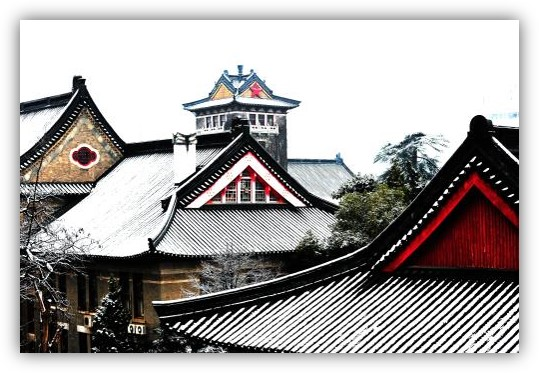
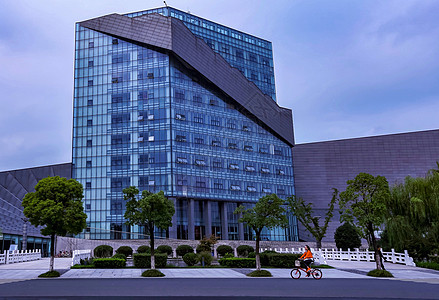
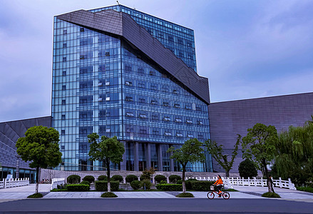
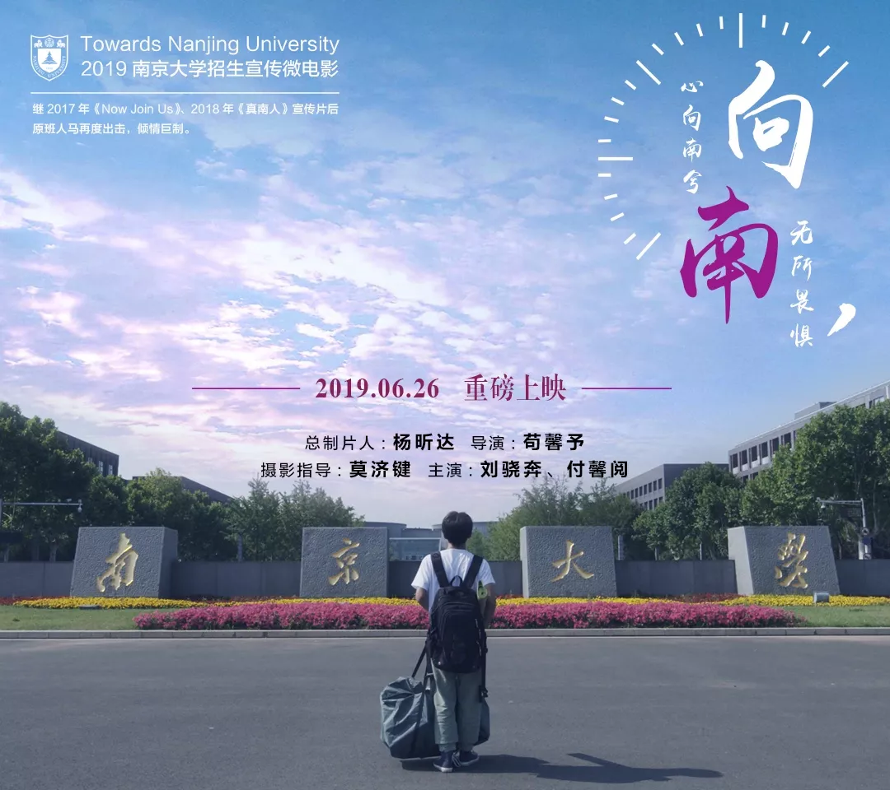
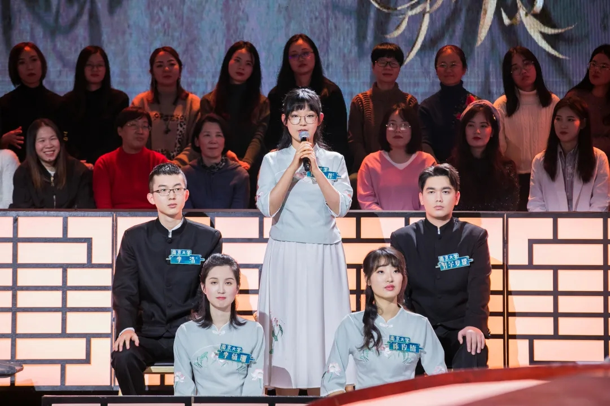
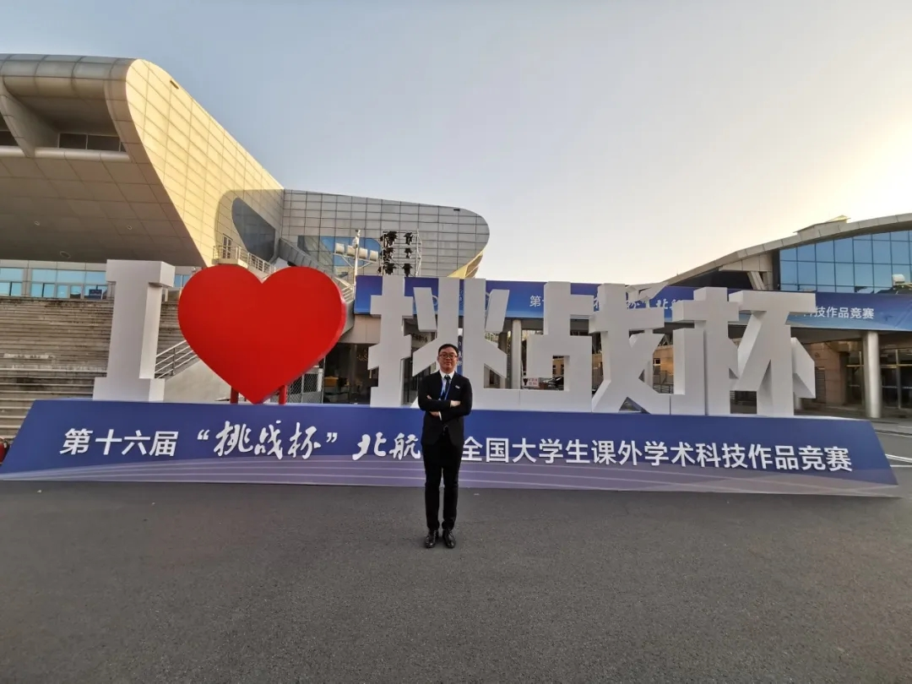
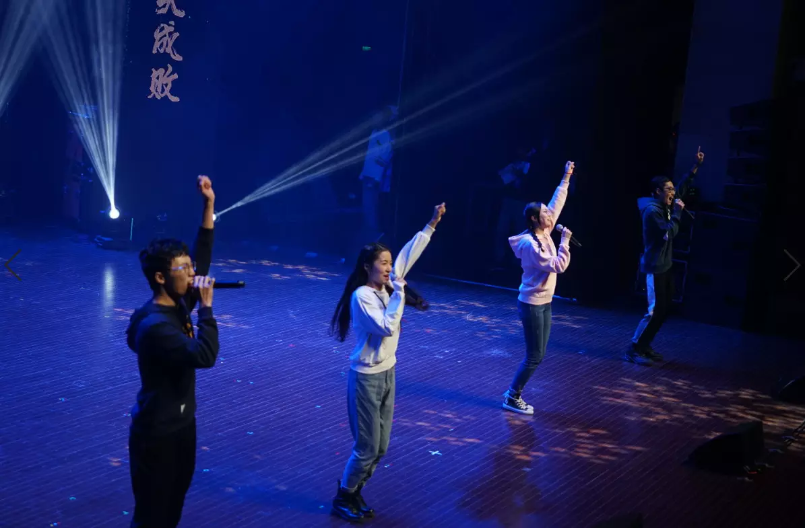

www.MYNJU.com


-遇见最好的南大-
在一个多世纪的办学历程中，南京大学及其前身与时代同呼吸、与民族共命运，谋国家之强盛、求科学之进步，为国家的富强和民族的振兴做出了重要的贡献。尤其是改革开放以来，作为教育部直属的重点综合性大学，南京大学又在崭新的历史机遇中焕发出新的生机，在教学、科研和社会服务等各个领域保持良好的发展态势，各项办学指标和综合实力均位居全国高校前列。1994年，南京大学被确定为国家“211工程”重点支持的大学；1999年，南京大学进入国家“985工程”首批重点建设的高水平大学行列；2006年，教育部和江苏省再次签订重点共建南京大学的协议；2011年，教育部和江苏省签署协议继续重点共建南京大学；2016年，南京大学入选首批国家级双创示范基地；2017年，南京大学入选A类世界一流大学建设高校名单，15个学科入选世界一流学科建设名单。
 

南京大学拥有一支高素质的师资队伍，其中包括中国科学院院士28人，中国工程院院士4人，中国科学院外籍院士1人，在国际或他国当选院士13人次（含第三世界科学院院士4人，发展中国家科学院院士1人，俄罗斯科学院院士1人，加拿大皇家科学院院士1人，欧洲文理科学院院士1人，欧洲科学院外籍院士2人，国际量子分子科学院院士1人，俄罗斯艺术科学院荣誉院士1人，法兰西艺术院通讯院士1人），教育部“长江学者奖励计划”特聘教授100人、“青年长江学者”14人，国家杰出青年基金获得133人、优秀青年科学基金项目获得者91人，国家科技重大专项、“973计划”、“863计划”、国家重点研发计划等重大项目首席科学家98人次，国务院学位委员会学科评议组成员22人，“万人计划”科技创新领军人才22人、哲学社会科学领军人才6人、百千万工程领军人才2人、教学名师4人、青年拔尖人才21人，国家级教学名师11人，教育部“百千万人才工程”国家级人选34人，“青年海外高层次人才计划”入选者108人。
南大是什么样的呢？
南大之大，在于它永远都将舞台与空间留给艺术，自由的灵魂嘶声而鸣，蓬勃的生命力与创造力野蛮生长，舞台的灯光亮起是歌者舞者流光溢彩，笔墨的盖子合上是诗文篇章已然书就。南大之大，在于它永远都能给予人们关怀与温暖，无论老师、同学亦或食堂大叔，南大人这个群体始终乐于送人玫瑰，亦将余香扩散，代代相传。“我们南大的大，不在于假装伟大，而是一遍遍给孩子们耳语。不要放弃尝试和发现自己热爱的事情。每一次不带任何功利的对于生命的体验，是永葆热情的永动力。百年后的南大人，依旧受着同样的教育，血液里涌动的，也是同为南大人的情怀。刘欣、华春莹、韦慧晓……她们活跃在各个领域，依旧代表南大人，为中国添彩。
“（鹏）背负青天…而后乃今将图南”

-遇见最好的南大学子-
南大学子积极参加各类型学科竞赛，如数学建模与大数据算法比赛，挑战杯与创新创业类比赛和各种考验学科素养的专业类型比赛。从理工科到文科，南大学子不惧学科交叉，用灵活的思辨能力挑战自我，拷问极限，收获了满满的荣誉。
 
经学致用，是学习的重要目的。热衷实践，善于实践，脚踏实地，绽放自己的才能，向别人展示真善美。这是南大的气质，也是南大的青春气魄。学子们从未忘记过向天空和大地致敬。
